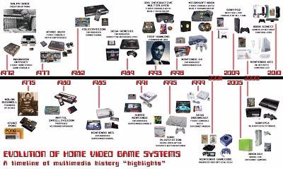

Video games,also known as computer games, are electronic games that involves interaction with a user interface or input device – such as a joystick, controller, keyboard, or motion sensing device – to generate visual feedback. This feedback mostly commonly is shown on a video display device, such as a TV set, monitor, touchscreen, or virtual reality headset. Some computer games do not always depend on a graphics display, for example text adventure games and computer chess can be played through teletype printers. Video games are often augmented with audio feedback delivered through speakers or headphones, and sometimes with other types of feedback, including haptic technology.
Video games are defined based on their platform, which include arcade video games, console games, and personal computer (PC) games. More recently, the industry has expanded onto mobile gaming through smartphones and tablet computers, virtual and augmented reality systems, and remote cloud gaming. Video games are classified into a wide range of genres based on their type of gameplay and purpose.
The first video game prototypes in the 1950s and 1960s were simple extensions of electronic games using video-like output from large room-size computers. The first consumer video game was the arcade video game Computer Space in 1971. In 1972 came the iconic hit arcade game Pong, and the first home console, the Magnavox Odyssey. The industry grew quickly during the golden age of arcade video games from the late 1970s to early 1980s, but suffered from the crash of the North American video game market in 1983 due to loss of publishing control and saturation of the market. Following the crash, the industry matured, dominated by Japanese companies such as Nintendo, Sega, and Sony, and established practices and methods around the development and distribution of video games to prevent a similar crash in the future, many of which continue to be followed. Today, video game development requires numerous skills to bring a game to market, including developers, publishers, distributors, retailers, console and other third-party manufacturers, and other roles.

In the 2000s, the core industry centered on "AAA" games, leaving little room for riskier, experimental games. Coupled with the availability of the Internet and digital distribution, this gave room for independent video game development (or indie games) to gain prominence into the 2010s. Since then, the commercial importance of the video game industry has been increasing. The emerging Asian markets and mobile games on smartphones in particular are altering player demographics towards casual gaming and increasing monetization by incorporating games as a service. As of 2020, the global video game market has estimated annual revenues of US$159 billion across hardware, software, and services. This is three times the size of the 2019 global music industry and four times that of the 2019 film industry